Accéder à la configuration Système
Depuis le Menu principal de l'interface d'administration,
-
dans la section Configuration, cliquez sur Configuration avancée ;
-
dans l'interface [Nom_du_serveur]>Configuration avancée, cliquez sur Configuration Système :
-
vous accédez à l'interface Configuration Système de Watchdoc. Une partie des informations qui y figurent sont celles qui ont été saisies lors de l'installation de Watchdoc (également présentes dans l'interface Configuration initiale du service).
è L'interface Configuration Système de Watchdoc comporte plusieurs sections. Depuis la version 6.0.0.4772 , certaines de ces sections peu utilisées sont présentées dans des panneaux dépliants (collapsible).
Section Configuration Générale
-
Id Serveur : indiquez l'adresse DNS ou l'adresse IP du serveur hébergeant le kernel
 En anglais, Kernel signifie "noyau". Dans nos documents, il désigne le service de Watchdoc chargé de la gestion des impressions hors Site web. Watchdoc.
En anglais, Kernel signifie "noyau". Dans nos documents, il désigne le service de Watchdoc chargé de la gestion des impressions hors Site web. Watchdoc. -
Nom Serveur : indiquez le nom (en langage naturel) explicite du serveur. Ce nom étant affiché dans les différentes interfaces ainsi que dans les rapports statistiques, il doit être précis. Par exemple : "Impression site de Lille 2e étage" ; "Serveur Impression Bâtiment B" ; "Serveur d'impression du pôle commercial de Paris".
-
Description : si nécessaire, complétez le nom à l'aide d'une description du serveur.
-
Code de site : indiquez, s'il existe, l'identifiant correspondant au site. Par exemple "LIL-ET2" ;
-
Emplacement : si nécessaire, fournissez une information relative à la localisation géographique du serveur. Cette information peut être utile en cas d'intervention physique sur le serveur. Par exemple : "Hébergée dans la salle serveurs 2 - 3e étage".
-
Tags : saisissez des mots-clés qui serviront éventuellement de critères de recherche pour retrouver facilement le serveur
-
-
Langue : dans la liste, sélectionnez la langue du site web d'administration ;
-
Horaires : indiquez dans ce champ les horaires d'utilisation habituels des périphériques d'impression. Saisissez les valeurs "0-24" si les périphériques d'impression fonctionnent en continu.
-
Week-end : sélectionnez dans la liste les deux jours durant lesquels les périphériques d'impression ne sont pas utilisés ou sélectionnez la valeur "Pas de jour de repos" si les périphériques fonctionnent sans interruption.
Les informations relatives aux horaires et week-end servent principalement à construire la condition "Pendant les horaires d'ouverture" lors de la conception des filtres. Elles sont également utilisables dans les rapports d'activité.
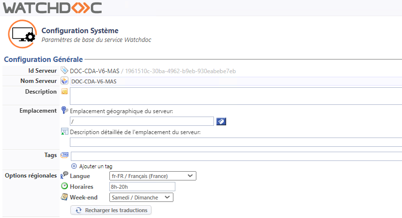
-
Section Sécurité
-
Le Super Utilisateur est un administrateur disposant du droit d'accéder à l'interface d'administration en mode maintenance et habilité, de ce fait, à modifier toute la configuration de Watchdoc.
Dans cette section :
-
Mot de passe : il s'agit du mot de passe permettant d'accéder à l'interface d'administration en tant que Super Utilisateur. Ce compte permet un accès au site d'administration en mode maintenance. Le mot de passe pris en compte par défaut est celui qui a été défini lors de l'installation de Watchdoc. Si vous souhaitez le modifier, saisissez un nouveau mot de passe dans cette zone.
-
Interdire l'accès super utilisateur depuis le réseau : cochez la case si vous souhaitez, par mesure de précaution, empêcher un accès en mode "maintenance" afin de réserver l'accès au site d'administration depuis le serveur d'impression exclusivement, c'est-à-dire à partir de l'url "http://localhost/Watchdoc/admin/".
-
Utiliser les Profils de Sécurité pour restreindre les droits d'administration par groupes de files d'impression : cochez cette case si vous souhaitez activer la hiérarchisation de l'administration des groupes de files. Ainsi, des adjoints pourront se voir confier l'administration de groupes de files spécifiques.(cf. Droits - Gérer les droits d'administration d'un groupe de files).
-
-
Obfuscation : il est possible de sécuriser les mots de passe saisis dans l'interface d'administration Watchdoc en activant un algorithme de chiffrement. Lorsque cette fonction est activée, les mots de passe n'apparaissent plus en clair dans le fichier de configuration de l'application.
-
Répliquer cette configuration sur tous les serveurs : si la configuration a lieu sur le serveur maître d'un domaine (configuration maître/esclaves), cochez cette case si vous souhaitez répliquer l'obfuscation sur tous les serveurs qui dépendent de ce serveur maître ;
- Activer l'obfuscation des mots de passe dans le fichier de configuration : pour des raisons de sécurité, la fonction est cochée par défaut. Décochez la case si vous souhaitez désactiver l'obfuscation des mots de passe :
-
Algorithme utilisé pour le chiffrement : l'algorithme AES
Advanced Encryption Standard ou AES (litt. « norme de chiffrement avancé »), aussi connu sous le nom de Rijndael, est un algorithme de chiffrement symétrique.Approuvé par la NSA (National Security Agency) dans sa suite B1 des algorithmes cryptographiques, c' est actuellement le plus utilisé et le plus sûr. (Source : Wikipédia) est appliqué par défaut. 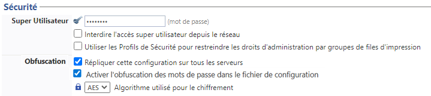
-
Configurer la section Paramètres réseaux
Dans cette section, définissez les informations techniques relatives de Watchdoc :
-
Nom d'hôte : indiquez de quelle manière doit être appelé le serveur :
-
par défaut : c'est le nom du serveur (saisi dans la section Configuration générale) affiché par défaut qui est utilisé.
-
nom DNS Serveur : par défaut, Watchdoc utilise le nom NetBios du serveur, mais dans le cas où certains postes (connectés au serveur) ne peuvent pas résoudre correctement les noms, de même que si l'id Serveur est susceptible de changer, il est conseillé de spécifier un nom DNS complet, comme, par exemple, "serveur.domain.com" ou l'adresse IP (ex: 192.168.x.y)
-
Alias DNS : cochez cette case et complétez le champ si vous souhaitez utiliser le nom DNS attribué au serveur d'impression. Ce nom est utilisé dans les courriels éventuellement envoyés aux utilisateurs du service.
-
-
Public IP :
-
Autodétection de l'adresse IP publique : cochez cette option pour laisser le système détecter lui-même l'IP publique du serveur.
-
Adresse IP : saisissez directement l'adresse IP du serveur si vous souhaitez paramétrer vous-même cette adresse.
-
-
Sous-section .Net Remoting. Ces paramètres ne sont utiles que dans le cas où Watchdoc fonctionne en mode cluster ou déporté : dans ce cas, indiquez les paramètres de communication via l'outil .Net Remoting :
-
Nom d'hôte : indiquez le nom d'hôte du cluster virtuel d'impression à utiliser pour contacter cette instance de Watchdoc.
-
IP Locale : indiquez l'adresse IP du cluster virtuel d'impression à utiliser pour contacter cette instance de Watchdoc.
-
Port local : indiquez le numéro du port permettant au site web Watchdoc de communiquer avec le service Watchdoc (port TCP/UDP 5744 utilisant le protocole Dotnet).
-
-
Sous-section Site Web. Indiquez dans cette section les paramètres relatifs au site web d'admininistration et d'utilisation vers lequel doivent pointer certains liens (comme les e-mails de notification, par exemple). Dans le cas où un même serveur Watchdoc serait adressable par plusieurs serveurs IIS, veuillez spécifier le site web "principal", c'est-à-dire celui qui dispose de plus grande visibilité (DNS / firewall) pour les utilisateurs.
-
Nom DNS : indiquez le nom DNS du site web : il est fortement conseillé d'utiliser un nom FQDNS (ex: "server.print.com") au lieu d'un nom d'hôte simple ("PRINT") afin d'éviter tout problème de résolution DNS.
-
Sécurité : cochez la case si vous souhaitez utiliser le protocole 'https' pour les liens web ;
-
Port HTTP : indiquez le port TCP du serveur IIS permettant d'accéder au serveur
-
Préfixe URL : indiquez le préfix de l'url
-
Id Server : indiquez ici l'identifiant du serveur.s'il existe.
-
-
Sous-section Site Client
-
Autoriser les utilisateurs à accéder au site web de déblocage : cochez cette case pour mettre un site web de déblocage à disposition des utilisateurs.
Dans le cas où le site web de déblocage est autorisé, il est nécessaire de le configurer (Main Menu > Section Configuration > Web & WES > Profils déblocage web).
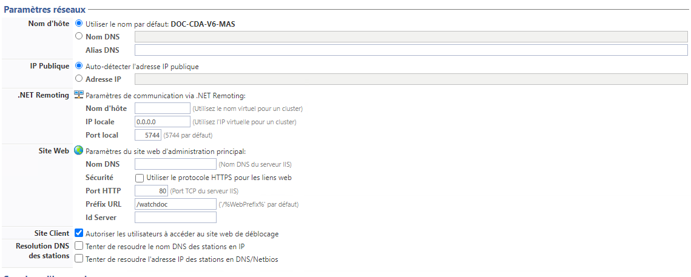
-
Configurer la section Spouleur d'impression
Dans cette section, indiquez les paramètres qui permettent à l'interface admnistrateur de communiquer avec le kernel Watchdoc.
-
Serveur d'impression. Indiquez le mode de fonctionnement du serveur :
-
Se connecter au serveur local : choisissez ce bouton si Watchdoc est installé en mode autonome (cf. article Prérequis d'installation et de configuration) ; si Watchdoc est installé en mode déporté (non-recommandé) ou Cluster
Techniques permettant le regroupement d'ordinateurs indépendants (appelés "noeuds") afin de permettre un gestion globale et de dépasser les limitations d'un ordinateur pour en augmenter la disponibilité, faciliter la montée en charge et répartir les charges ou faciliter la gestion des ressources, notamment., décochez la case et indiquez le nom DNS du serveur d'impression. -
Nom DNS : si Watchdoc est installé en mode déporté (non recommandé) ou en cluster, saisissez le nom DNS du serveur d'impression sur lequel est installé le kernel de Watchdoc. (cf. article Prérequis d'installation et de configuration).
-
-
Répertoire Spool.
-
Dans cette section, indiquez le dossier dans lequel sont enregistrés les spools
File d'attente avant envoi au périphérique. A l'origine, le mot 'spool' est l'acronyme de 'simultaneous processing operations on line'.
Le spool d'impression désigne le fichier d'édition envoyé au périphérique d'impression. Il regroupe l'ensemble des ordres que l'imprimante doit exécuter pour mener à bien l'impression d'un ou plusieurs documents.. -
Utiliser le répertoire de spool par défaut : choisissez ce bouton pour laisser Watchdoc détecter automatiquement l'endroit où sont enregistrés les fichiers de spools (portant l'extension .shd et .spl) ;
-
Chemin : optez pour ce choix si vous ne souhaitez pas utiliser le dossier par défaut, et indiquez le chemin d'accès au dossier où sont enregistrés les fichiers de spools.
Par défaut, les fichiers de spools sont enregistrés dans C:\Windows\System32\spool\PRINTERS
En mode cluster, il est obligatoire d'indiquer le chemin du répertoire spooler partagé du cluster.
-
-
EMF. Vous pouvez activer ou désactiver les fonctionnalités d'impression avancées (EMF
Enhanced Metafile (ou EMF) est un format d'image numérique pour les systèmes Microsoft Windows et certains pilotes d'impression. Il s'agit d'une amélioration du type de fichier image de type WMF (Windows Metafile) avec des données codées sur 32 bits pour une meilleure qualité.) de MS Windows. En configuration initiale, nous vous recommandons de conserver le paramétrage par défaut défini par le pilote du périphérique et de ne le modifier qu'à des fins de dépannage. -
CSR
Client Side Rendering. Dans une infrastructure Client/serveur, le Client-side rendering est la prise en charge du spool par le poste client et non par le serveur. Le poste client envoie donc au serveur un fichier de spool finalisé.. Dans une infrastructure client/serveur, le Client-Side Rendering est la prise en charge du spool par le poste client et non par le serveur. Le poste client envoie donc au serveur un fichier de spool finalisé. En configuration initiale, nous vous recommandons de conserver le paramétrage par défaut.
La fonction transformation de spools nécessite l'activation du mode Client Side Rendering. -
Filtrage - Suppression automatique des impressions vides : certains pilotes d'impression envoient systématiquement un document vide appelé "Document local bas niveau" avant chaque impression. Cochez cette case pour activer la fonction de filtrage qui permet à Watchdoc de détecter et de supprimer automatiquement ces travaux d'impression ne contenant pas de données.
-
Sans Echec - Imprimer quand même les documents contenant des erreurs : ce paramètre permet à Watchdoc d'imprimer tous les travaux d'impression, même dans le cas où les fichiers de spools présentent des erreurs empêchant l'interprétation des métadonnées.
Afin d'éviter le blocage d'un certain nombre d'impressions, il est conseillé de conserver cette case cochée par défaut.
-
Synchro. En configuration initiale, il est conseillé de conservez les cases cochées par défaut et de ne les décocher qu'en cas de dépannage.
-
Synchroniser les imprimantes Shadow au démarrage du service ;
-
Synchroniser l'imprimante Shadow lorsque la file d'impression démarre ;
-
Synchroniser l'imprimante Shadow lorsque la configuration Shared est modifiée ;
-
Synchroniser les champs Emplacement et Description entre Watchdoc et le Spooler Windows.
-
-
Journaux :
-
Enregistrer les notifications du Spouleur d'impression Windows (dans le journal de l'application) : cochez la case pour activer l'enregistrement des notifications ;
-
Diagnostiquer l'extraction du chemin des fichiers spools (dans le journal de l'application) :
-
Enregistrer l'activité complète du Spouleur d'impression Windows sur le disque (un fichier par imprimante) : cochez cette case pour conserver une trace complète sur un disque dur, puis complétez le champ suivant pour indiquer l'endroit où sera enregistré le fichier trace ;
-
Chemin : dans ce champ, indiquez le chemin d'accès au fichier dans lequel est enregistrée l'activité complète du spouleur Windows.
-
-
Comptabilisation :
-
Utiliser l'information des parseurs [...] utilisateurs suivants : listez dans ce champ les utilisateurs pour lesquels la comptabilisation doit exploiter l'information du parseur (en les séparant par un point-virgule) :
-
Utiliser l'information des parseurs [...] stations suivantes : listez dans ce champ les utilisateurs pour lesquels la comptabilisation doit exploiter l'information du parseur (en les séparant par un point-virgule) ;
-
Utiliser l'information des parseurs [...] adresses IP suivantes : listez dans ce champ les adresses IP pour lesquelles la comptabilisation doit exploiter l'information du parseur (en les séparant par un point-virgule).
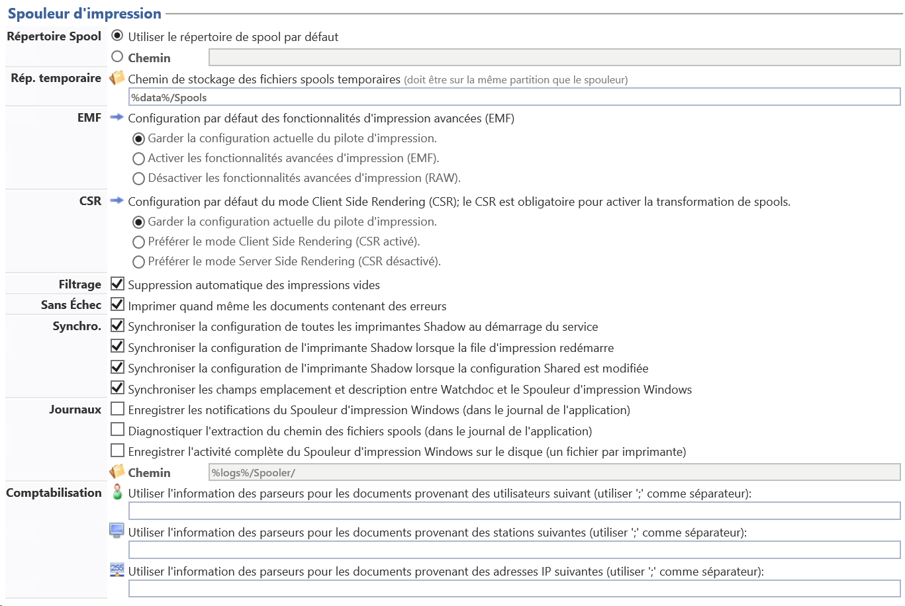
-
Configurer la section DSP
-
Serveur Web
-
Activer le serveur web DSP
Les fichiers SHD appartiennent principalement à Print Spooler de Microsoft. Un fichier SHD est un travail d'impression fantôme contenant des informations d'en-tête sur un travail d'impression lancé par le service Print Spooler sur Windows système d'exploitation. Les informations enregistrées dans un fichier SHD incluent une copie des paramètres de travail d'impression enregistrés dans le document spoule réel (fichier SPL).
(source : https://filext.com/) : cochez la case pour activer le serveur web Watchdoc qui permet les interactions avec les WES. -
Port SSL : indiquez le port d'accès au serveur DSP (5753 par défaut) ;
-
N'autoriser que les connexions SSL : cochez cette case pour obliger le serveur à fonctionner de manière sécurisée avec le protocole SSL ;
-
Utiliser uniquement les protocoles TLS :
-
-
Protocoles de sécurisation
-
Utiliser les protocoles autorisés par le Système d'administration : choisissez cette option pour permettre au système d'administration d'utiliser ses propres paramètres SSL et TLS plutôt que ceux qui sont paramétrés.
-
Utiliser les paramètres suivants : choisissez cette option pour utiliser les paramètres qui sont listés ensuite, puis cochez les cases des protocoles que vous souhaitez utiliser (SSL ou TLS v. 1.0, v1.1, v1.2) :
-
-
Journaux.
-
Historiser les requêtes entrantes (dans le journal du serveur web) : cochez la case si vous souhaitez enregistrer l'activité réseau ( chaque packet request et response) sur le serveur DSP. Par défaut, chaque requête web traitée par le serveur (syntaxe compatible W3C Log) est enregistrée dans un fichier log sur le disque.
-
Enregistrer toute l'activité réseau sur le disque (un fichier par requête ou réponse) :
-
Chemin : précisez dans ce champ le chemin d'accès au dossier dans lequel doivent être enregistrés les fichiers de logs.
Les fichiers trace nécessitant de l'espace sur le serveur, nous vous recommandons d'activer l'historisation temporairement, afin d'établir un diagnostic relatif à l'activité réseau sur le serveur DSP et de la désactiver une fois les traces collectées
-
-
Paramètres avancés
-
Nombre de clients maximum : indiquez dans ce champ le nombre maximum de clients autorisés à se connecter au serveur.
-
Optimiser le serveur pour un usage principalement depuis le Réseau Local (Ethernet) : cochez la case pour activer l'optimisation
-
Optimiser le serveur pour un grand nombre de clients connectés : cochez la case pour activer...
-
Taille requête POST maximum : indiquez, en Gb (Mb ?), la taille des requêtes POST acceptées par le serveur
-
Autoriser les connexions Keep-Alive (nécessaire pour certaines fonctionnalités) : cochez cette case pour permettre
-
Activer la compression automatique des réponses (consomme des ressources CPU) : cochez cette case pour compresser les réponses fournies par le serveur aux requêtes qui lui sont envoyées par les applications tierces.
-
Proxy inverse : cochez cette case si le réseau est doté d'un proxy et indiquez l'IP du proxy (par exemple http://localhost:8000)

Configurer la section Paybox
Paybox (commercialisée par Verifone e-commerce) est une application tierce de paiement en ligne compatible avec un grand nombre de banques françaises qui peut être associée à Watchdoc pour assurer le règlement des travaux d'impression dès lors qu'ils sont soumis à rémunération. Si Watchdoc fonctionne avec la solution Paybox pour le paiement des travaux d'impression, il convient d'en préciser les paramétres.
-
dans la section Paybox, complétez les champs à l'aide des paramètres suivants :
-
Numéro de site : saisissez le numéro de site fourni par Paybox ;
-
Numéro de rang : saisissez le numéro de rang fourni par Paybox ;
-
Identifiant interne : saisissez l'identifiant interne fourni par Paybox ;
-
Clé secrète : saisissez la clé fournie par Paybox et mise à votre disposition dans l'espace client (Back office) ou la clé de test suivante : 0123456789ABCDEF0123456789ABCDEF0123456789ABCDEF0123456789ABCDEF0123456789ABCDEF0123456789ABCDEF0123456789ABCDEF0123456789ABCDEF;
-
URL externe ; saisissez l'adresse IP (ou le FQDN si vous utilisez le port 443 et le certificat) et le port (80, 8080-8085 (HTTP) ou 443 (HTTPS)) via lesquels accéder au site Paybox ;
-
URL Paybox : saisissez l'URL d'appel de la page de paiement Paybox ;
-
Contrôles de sécurité :
-
adresses : cochez la case pour limiter aux seules adresses Paybox la confirmation de paiement. Décochez la case si la confirmation de paiement sollicite un autre système et indiquez l'IP de ce système au besoin (IP d'un reverse proxy, par exemple) ;
-
vérifier la signature : cochez la case pour vérifier la signature avec le certificat public Paybox.
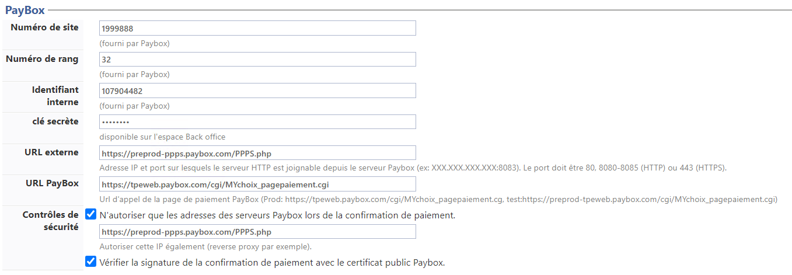
-
-
Configurer la section Télémétrie
- Télémétrie: cochez la case pour activer la connexion entre Watchdoc et WSC, la console de supervision de Watchdoc. Le cas échéant, complétez les paramètres relatifs à cette console :
-
Hôte : indiquez le nom du serveur sur lequel est installée la console de télémétrie ;
-
Port : indiquez le port d'accès au serveur de télémétrie (5756 par défaut) ;
-
HTTPS : cochez la case si vous souhaitez que la connexion soit sécurisée par le protocole HTTPS;
-
Files : cochez la case si vous souhaitez que les données de télémétrie soient envoyées sur les files virtuelles ;
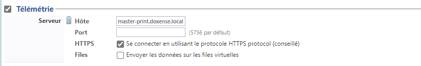
Depuis la version 6.0.0.4800, l'activation de la télémétrie sur le serveur master est automatiquement répliquée sur les serveurs slaves du domaine.
-
Configurer la section Impression interserveur
Cette section permet d'activer l'impression interserveur (si elle ne l'est pas par héritage du serveur maître) et d'en définir les paramètres (cf. Impression à la demande interserveur) :
Global: si la configuration a lieu sur le serveur maître d'un domaine (configuration maître/esclaves), cochez la case "Global" si vous souhaitez répliquer la source de données sur tous les serveurs Watchdoc qui dépendent du serveur maître (à partir de la version 6.1.0.4968) ;
Stockage : dans la liste déroulante, sélectionnez la base de données utilisée pour stocker les fichiers de configuration des files (et données utilisateurs).
Connexion : s"il s'agit d'une base de données SQL, complétez-en la configuration :
Type : dans la liste déroulante, sélectionnez le type de base de données ;
Serveur SQL : cliquez sur le bouton
pour parcourir la liste des serveurs sur lesquels sont installées des bases de données SQL ;
Authentification : dans la liste, sélectionner le mode d'authentification à la base. Pour l'authentification SQL Serveur, complétez ;
Nom d'utilisateur : saisissez le nom du compte autorisé à administrer la base de données ;
Mot de passe : saisissez le mot de passe du compte autorisé à administrer la base de données ;
Base de données : cliquez sur le bouton
Tester le cluster : cliquez sur le bouton
pour vérifier que les bases du cluster sont bien connectées. Un message informe du succès de la configuration. Si la base n'est pas correctement configurée, des messages informent sur la nature du problème de connectivité entre les bases.
Cache : cochez la case pour activer un cache mémoire et indiquez, en secondes, la durée du fusible dans le champ suivant.
Ce paramètre permet aux utilisateurs de s'authentifier sur le WES pour débloquer leurs travaux en attente, même en cas de panne de la base de données interserveur. Passé ce délai, les utilisateurs ne peuvent plus s'authentifier sur le périphérique tant que la base reste injoignable.Paramètres : cochez la case pour activer la journalisation des messages à des fins d'analyse en cas de problème ou de panne.
Nous vous recommandons de n'activer la journalisation que ponctuellement, à des fins d'analyse en cas de dysfonctionnement car elle nécessite des ressources ainsi qu'un espace de stockage importants.

Configurer la section NetPOD
NetPOD est un ancien terminal de (type CopiCod-IP) connecté à un périphérique d'impression, permettant la saisie d'un code PUK ou la lecture d'un badge pour débloquer les impressions en attente.
Si vous utilisez NetPOD, précisez :
-
Port : indiquez le port d'accès au serveur NetPOD (5743 par défaut) ;
-
Journaux : précisez quelles sont les traces de l'activité que vous souhaitez conserver :
-
historiser l'activité du serveur
-
historiser l'activité des clients connectés
-
historiser les commandes en provenance des clients
-
enregistrer toute l'activité : si vous cochez cette option, indiquez dans le champ Chemin le chemin vers le dossier dans lequel sont enregistrés les journaux.
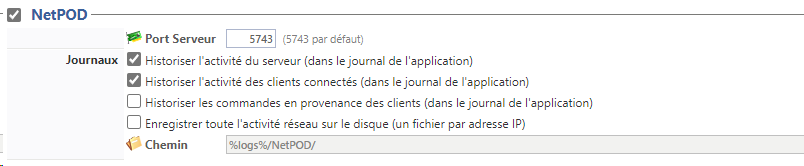
-
Configurer la section TCPConv / Elatec
TCPConv d'Elatec est un dispositif équipé d'un port USB ou RS232 permettant l'intégration de périphérique au réseau local (LAN) . Il suffit d'insérer TCPConv dans la connexion LAN existante de votre appareil. Pour ce faire, TCPConv contient 2 ports LAN , qui fonctionnent comme un commutateur de réseau.
-
Port : indiquez le port d'accès au serveur TCPConv si ce n'est pas le port par défaut (5743) ;
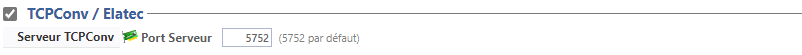
Configurer la section LDAP
Cette section ne concerne que les WES utiilisant la technologie OpenPlatform : elle contient l'information permettant à Watchdoc d'être contacté par le WES comme un annuaire LDAP
-
Port Serveur :indiquez le port d'accès s'il ne s'agit pas du port par défaut.
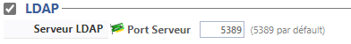
Configurer la section Scan vers Url
Lorsqu'un fichier numérisé par WEScan dépasse un certain poids, il est possible de ne pas l'envoyer à son destinataire en pièce jointe du mail, mais sous forme d'un lien url. Le destinataire peut alors récupérer le document en cliquant sur l'url.
Pour paramétrer cette fonction, complétez les paramètres suivants :
La fonction Scan vers URL est activée par défaut, mais vous pouvez personnaliser les paramètres de cette fonction.
-
Adresse du proxy : saisissez l'adresse du proxy s'il y en a un ; si le champ reste vide, les fichiers volumineux seront enregistrés dans un dossier du serveur Watchdoc par défaut ;
-
Chemin de la route du proxy : précisez la route du proxy s'il existe ;
-
Validité du lien : indiquez dans le champ le temps (1 h. min.) durant lequel le fichier numérisé reste téléchargeable. Au-delà de cette durée, le fichier numérisé est supprimé automatiquement et le lien de téléchargement devient invalide :
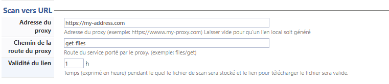
Configurer la section stockage local
La base de données Json (JsonDb) de Watchdoc sert à stocker certaines informations à froid telles que les étapes d’une numérisation, par exemple.
Il peut arriver que certains programmes de sécurité verrouillent des fichiers stockés dans la JsonDb, causant ainsi des problèmes.
Cette section permet de configurer le stockage local afin de modifier la manière dont les fichiers JsonDB sont conservés : sous forme de fichiers sur disques par défaut ou dans un serveur SQL pour éviter le verrouillage.
Si vous optez pour le stockage en base de données, il convient de créer une base de données spécifique sur chaque serveur.
-
Configurez le stockage :
-
Type de stockage local : dans la liste, sélectionnez le type de stockage (Fichiers sur le disque par défaut ou Base de données SQL). Pour une bdd SQL, précisez :
-
Connexion :
-
Type : précisez le type de la base de données utilisée ;
-
Serveur SQL : saisissez le chemin d'accès au serveur ou cliquez sur le bouton
pour sélectionner le serveur parmi ceux qui sont disponibles depuis votre environnement de travail ; - Authentification : précisez le type d'authentification. Pour une authentification MS SQL, précisez les données d'un compte autorisé à se connecter :
nom d'utilisateur
mot de passe
-
Base de données : saisissez le chemin d'accès à la base de données ou cliquez sur le bouton
pour sélectionner la base de données parmi celles qui sont disponibles depuis votre environnement de travail ;
-
-
Chemin : pour une base SQLite, indiquez son chemin d'accès.
-
-
Cliquez sur le bouton
-
Tester pour vérifier l'accès à la base de données configurée ;
-
Créer si vous créez la base de données pour les besoins du stockage local :
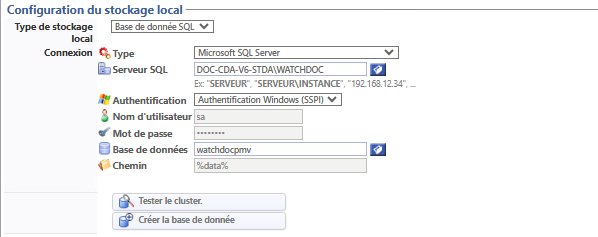
-
Configurer la section Divers
- Créer une copie de sauvegarde de la configuration au démarrage : cochez cette case si vous souhaitez conserver un fichier dans lequel est sauvegardée la configuration de l'application.
Par défaut, une copie de sauvegarde du fichier de configuration de Watchdoc est effectuée à chaque redémarrage du service.
Pour raison de performance, certaines modifications anodines de la configuration ne sont pas sauvegardées immédiatement sur disque. -
Désactiver le cache d'écriture du fichier de configuration : cochez cette case pour désactiver le cache
-
Certificat Print API : lors de l'installation de WPC for Windows, il est nécessaire d'exporter le certificat PrintAPI (print_api_cert.der), puis de l'enregistrer dans le dossier bin (C:\Program Files\Doxense\Watchdoc Print Client\bin) du poste de travail pour autoriser le fonctionnement de WPC for Windows ;
-
Désactiver tous les Oeufs de Pâques : cochez cette case si vous ne souhaitez pas voir apparaître les Oeufs de Pâques (Easter eggs) intégrés à l'application Watchdoc®.